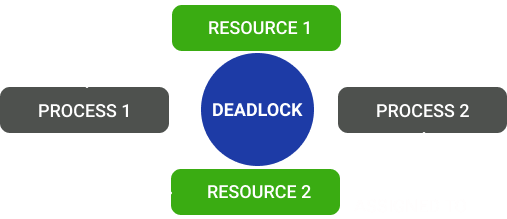
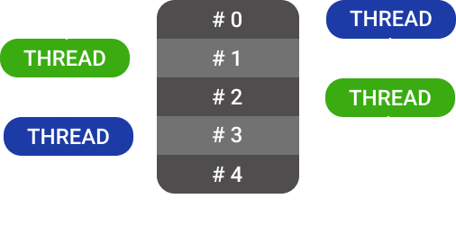

OPERATING
SYSTEM
VIRTUAL LAB
An operating system is a software that manages the computer hardware. The hardware must provide appropriate mechanisms to ensure the correct operation of the computer system and to prevent user programs from interfering with the proper operation of the system. The OS helps you to communicate with the computer without knowing how to speak the computer’s language. It is not possible for the user to use any computer or mobile device without having an operating system.
DEADLOCK, CONCURRENCY AND SEMAPHORE
DEADLOCK is a situation where a set of processes are blocked because each process is holding a resource and waiting for another resource acquired by some other process. Consider an example when two trains are coming toward each other on the same track and there is only one track, none of the trains can move once they are in front of each other.
CONCURRENCY is the execution of the multiple instruction sequences at the same time. It happens in the operating system when there are several process threads running in parallel. The running process threads always communicate with each other through shared memory or message passing. Concurrency results in sharing of resources result in problems like deadlocks and resources starvation.
SEMAPHORE is a very significant technique to manage concurrent processes by using a simple integer value, which is known as a semaphore. Semaphore is simply a variable that is non-negative and shared between threads. This variable is used to solve the critical section problem and to achieve process synchronization in the multiprocessing environment.
